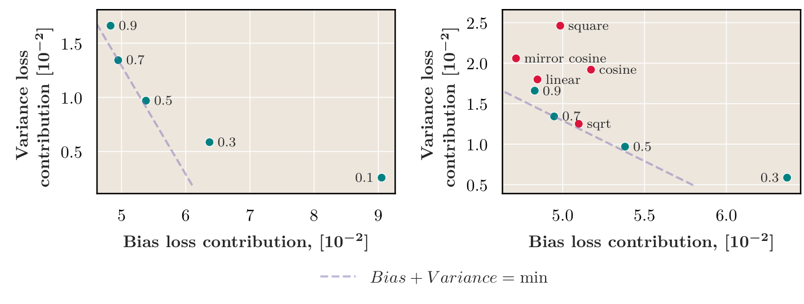

Figure 6
Training Dynamics of the Cooldown Stage in Warmup-Stable-Decay Learning Rate Scheduler
WSD 学习率冷却阶段的训练动力学：日程、优化器状态与证据边界
Aleksandr Dremov 等，Figure 6（arXiv:2508.01483v1，PDF 物理第 5 页，https://arxiv.org/abs/2508.01483v1，CC BY 4.0）：左图是降低起始学习率的线性冷却，右图同时比较其他形状；横轴为相对较长训练参考模型的损失差，纵轴是样本顺序变动下“各模型平均损失−平均权重模型损失”的 Jensen 型差。图中 0.7 线性与 sqrt 接近低总差；这是该 210M 模型、数据和参考模型下的有限实验，不是所有损失函数下的非负方差定理。